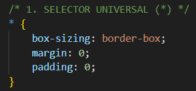

Introducción
Este reporte documenta la implementación y uso de 10 tipos de selectores CSS aplicados a una copia del index de pasatiempos. Cada selector incluye su definición, código CSS implementado y capturas de pantalla mostrando el resultado visual.
Copia de pasatiempos
1. Selector Universal (*)
Definición: Selecciona todos los elementos HTML de la página. Es útil para aplicar estilos base o reset CSS.
📄 Código CSS:
* {
box-sizing: border-box;
margin: 0;
padding: 0;
}
📸 Captura del Código CSS:

🌐 Resultado en HTML:
2. Selector de Tipo
Definición: Selecciona elementos por su nombre de etiqueta HTML (p, h1, div, section, etc.).
📄 Código CSS:
h1 {
color: #00d9ff;
text-shadow: 0 0 10px rgba(0, 217, 255, 0.5);
}
section {
background: rgba(0, 0, 0, 0.7);
border-radius: 15px;
}
📸 Captura del Código CSS:
[INSERTAR CAPTURA DEL CÓDIGO CSS]
🌐 Resultado en HTML:
[INSERTAR CAPTURA DEL RESULTADO EN LA PÁGINA]
3. Selector por ID (#)
Definición: Selecciona un elemento específico mediante su atributo id único. Se utiliza el símbolo # seguido del nombre del ID.
📄 Código CSS:
#main-title {
background: linear-gradient(45deg, #00d9ff, #0099cc);
padding: 25px;
border-radius: 20px;
}
📸 Captura del Código CSS:
[INSERTAR CAPTURA DEL CÓDIGO CSS]
🌐 Resultado en HTML:
[INSERTAR CAPTURA DEL RESULTADO EN LA PÁGINA]
4. Selector por Clase (.)
Definición: Selecciona elementos que tienen una clase específica. Se utiliza el punto (.) seguido del nombre de la clase.
📄 Código CSS:
.links {
list-style: none;
padding: 20px;
}
.links a {
color: #00d9ff;
text-decoration: none;
font-weight: bold;
}
📸 Captura del Código CSS:
[INSERTAR CAPTURA DEL CÓDIGO CSS]
🌐 Resultado en HTML:
[INSERTAR CAPTURA DEL RESULTADO EN LA PÁGINA]
5. Selector de Atributo
Definición: Selecciona elementos basándose en sus atributos. Se pueden usar diferentes variaciones como [atributo], [atributo="valor"], etc.
📄 Código CSS:
a[href^="https"] {
color: #28a745;
border: 2px solid #28a745;
padding: 5px 10px;
border-radius: 5px;
}
input[type="text"] {
border: 2px solid #00d9ff;
border-radius: 8px;
}
📸 Captura del Código CSS:
[INSERTAR CAPTURA DEL CÓDIGO CSS]
🌐 Resultado en HTML:
[INSERTAR CAPTURA DEL RESULTADO EN LA PÁGINA]
6. Selector de Lista
Definición: Selecciona múltiples elementos separados por comas. Permite aplicar el mismo estilo a diferentes selectores.
📄 Código CSS:
h1, h2, h3 {
color: #00d9ff;
font-family: 'Courier New', monospace;
}
.links, .main-footer, section {
border: 1px solid rgba(0, 217, 255, 0.3);
}
📸 Captura del Código CSS:
[INSERTAR CAPTURA DEL CÓDIGO CSS]
🌐 Resultado en HTML:
[INSERTAR CAPTURA DEL RESULTADO EN LA PÁGINA]
7. Selector de Descendientes
Definición: Selecciona elementos que están dentro de otros elementos (descendientes). Se usa un espacio entre selectores.
📄 Código CSS:
section p {
color: #ffffff;
background: rgba(0, 0, 0, 0.3);
padding: 10px;
border-radius: 5px;
}
.links a {
transition: color 0.3s;
}
📸 Captura del Código CSS:
[INSERTAR CAPTURA DEL CÓDIGO CSS]
🌐 Resultado en HTML:
[INSERTAR CAPTURA DEL RESULTADO EN LA PÁGINA]
8. Selector Hijos Directos (>)
Definición: Selecciona elementos que son hijos directos (primer nivel) de otro elemento. Se usa el símbolo >.
📄 Código CSS:
body > h1 {
text-align: center;
background: rgba(0, 0, 0, 0.8);
padding: 20px;
}
section > header {
border-bottom: 2px solid #00d9ff;
margin-bottom: 15px;
}
📸 Captura del Código CSS:
[INSERTAR CAPTURA DEL CÓDIGO CSS]
🌐 Resultado en HTML:
[INSERTAR CAPTURA DEL RESULTADO EN LA PÁGINA]
9. Selector Hermano Adyacente (+)
Definición: Selecciona el elemento que aparece inmediatamente después de otro elemento específico. Se usa el símbolo +.
📄 Código CSS:
h2 + p {
font-weight: bold;
color: #00d9ff;
margin-top: 10px;
}
header + p {
background: rgba(0, 217, 255, 0.1);
padding: 15px;
}
📸 Captura del Código CSS:
[INSERTAR CAPTURA DEL CÓDIGO CSS]
🌐 Resultado en HTML:
[INSERTAR CAPTURA DEL RESULTADO EN LA PÁGINA]
10. Selector Hermano General (~)
Definición: Selecciona todos los elementos que son hermanos y aparecen después de un elemento específico. Se usa el símbolo ~.
📄 Código CSS:
h2 ~ p {
margin-left: 20px;
border-left: 3px solid #00d9ff;
padding-left: 15px;
}
section ~ footer {
margin-top: 40px;
border-top: 3px solid #00d9ff;
}
📸 Captura del Código CSS:
[INSERTAR CAPTURA DEL CÓDIGO CSS]
🌐 Resultado en HTML:
[INSERTAR CAPTURA DEL RESULTADO EN LA PÁGINA]
Conclusión
Los selectores CSS son fundamentales para aplicar estilos específicos a elementos HTML. Cada tipo de selector tiene su propósito y uso específico, permitiendo un control preciso sobre la presentación visual de las páginas web.
Archivos del proyecto:
- indexPasatiempo.html - Copia del index de pasatiempos con selectores aplicados
- selectores.css - Archivo CSS con todos los selectores implementados
- index.html - Este reporte (archivo actual)